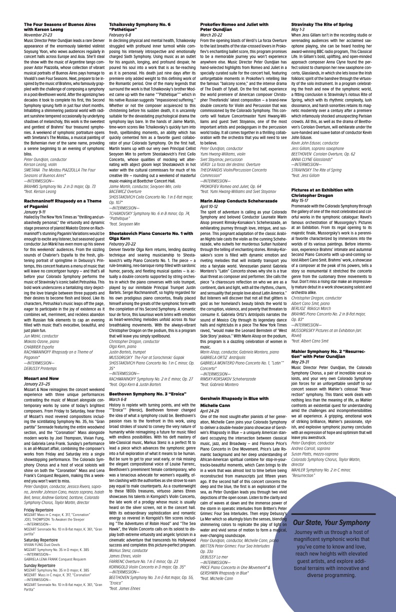

Colorado Symphony Mailer
A two-sided direct mail poster for the Colorado Symphony's 2025–2026 Classics season — designed to work as both a striking mailer cover and a practical season guide when unfolded.
The Brief
The assignment was to take a provided set of concert descriptions and artist information for the Colorado Symphony's 2025–2026 Classics season and organize it into a print mailer. The core challenge was typographic: fitting twelve concert weekends worth of programming — conductors, soloists, repertoire, and dates — into a single folded piece that remained legible, scannable, and visually coherent at the same time.

Front Cover
The front uses a deep royal blue field with a large cello silhouette as the central visual element. The season title is set in wide-tracked, spaced capitals that run across the instrument's body — creating tension between the geometric type and the organic curves of the cello.
The mailing address block sits in the upper left, rotated to read correctly when the piece is folded and sealed for mailing. Spacing and placement had to account for the fold so nothing critical was obscured.
Interior Spread
The interior needed to present twelve concerts worth of programming clearly. A tight two-column grid keeps the listings organized, with each concert entry structured consistently: title, date, conductor, soloists, and full repertoire.
Text sizing, leading, and hierarchy were carefully calibrated so the piece could carry a large volume of information without feeling dense or overwhelming. The goal was a spread that subscribers could use as a practical reference throughout the season.
